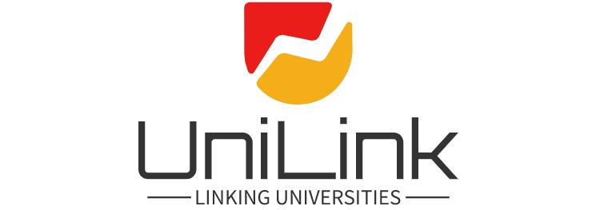

Welcome to UniLink
Your one-stop destination for all university-related information.
Explore UniversitiesAbout UniLink
Welcome to our educational services website! We are dedicated to connecting universities and fostering a collaborative learning environment for students, educators, and institutions alike. Our platform serves as a hub for educational resources, networking opportunities, and innovative tools, all aimed at enhancing the academic experience. At UniLink, we understand the importance of higher education and the impact it has on individuals and society. We believe that by facilitating connections between universities, we can unlock a wealth of knowledge and enable the exchange of ideas on a global scale. Our mission is to bridge the gap between institutions, promoting cooperation and synergy. Through our platform, universities can establish partnerships, share research findings, and collaborate on projects that drive academic advancement. We provide a space where educators can connect with peers from different institutions, fostering cross-pollination of ideas and expertise. For students, we offer a multitude of resources to support their educational journey. Our platform serves as a central hub for course materials, academic publications, and online learning resources. Students can access a diverse range of educational content, collaborate with peers from various universities, and engage in meaningful discussions that enhance their understanding of their respective fields. Additionally, we provide tools and services that facilitate seamless communication between universities. Whether it's organizing virtual conferences, hosting webinars, or connecting faculty members for research collaborations, our platform enables universities to expand their reach and make meaningful contributions to the world of academia. At UniLink, we believe in the power of education to transform lives and shape a better future. We invite universities, students, and educators to join our community and become part of a dynamic ecosystem where knowledge knows no boundaries. Together, let's unlock the full potential of education and empower individuals and institutions to create a positive impact in the world.
Services we offer
- Student Visa
- Airport Pickup
- Housing Assistance
Featured Universities
Multimedia University
A Premier Digital Tech University and being a trendsetter of the private higher learning provider in Malaysia.
Universiti Malaya
The University of Malaya is a public research university located in Kuala Lumpur, Malaysia.
Universiti Sains Malaysia
Affordability, and appropriateness, USM has set its Research focus to be "a pioneering, trans-disciplinary research intensive university.
Contact Us
Have a question or feedback? Get in touch with us on Whatsapp.